Herramientas computacionales locales y remotas
Table of Contents
- 1. Información General de la sala de Computadores
- 2. Conexión remota a la sala de cómputo
- 2.1. Usando vscode + remote-explorer ssh
- 2.2. Conexión gráfica usando xpra (soporta opengl)
- 2.3. (DEPRECATED) Conexión gráfica usando x2goclient
- 2.4. Conexión por ssh
- 2.5. (Opcional) Conexión con servidor vnc (turbovnc) para OpenGL
- 2.6. Conexión desde una tableta android
- 2.7. Conexión dentro del campus desde la red UNAL
- 2.8. (Opcional) File transfer
- 2.9. Otros tips
- 3. Local: Virtual box
- 4. Local: Live usb
- 5. Software
En este documento se presentan algunas herramientas que pueden ser útiles para estudiantes que requieren algunos recursos computacionales remotos o locales.
1. Información General de la sala de Computadores
La sala de cómputo tiene un servidor básico de entrada que además comparte archivos y autenticación con los nodos. La sala es completamente heterogénea, siendo una reunión de diversos computadores con diversas características y edades. Actualmente () se tiene la siguiente configuración:
| Cantidad | Num Threads | Ram (Gb) | Notes |
|---|---|---|---|
| 1 | 16 | 16 | 1 Nvidia Card |
| 10 | 16 | 16 | |
| 4 | 12 | 16 | |
| 4 | 12 | 8 | |
| 1 | 8 | 12 | |
| 3 | 6 | 8 | |
| 5 | 4 | 8 |
Los ips disponibles actualmente están en el rango 192.168.10.[2-29].
Es posible usar los computadores presencialmente como sala de cómputo, o conectarse al login node y desde allí lanzar trabajos usando slurm, como en un cluster (muy simplificado).
Actualmente el login node tiene ip 168.176.35.111 y el puerto ssh es 443
Información relevante:
- Solicitud de cuenta
- Usted debe tener cuenta en la sala de física. Normalmente, su profesor debe gestionar esta creación de cuentas. Pero usted también puede hacerlo de forma individual llenando el siguiente formulario: https://forms.gle/NJDSTN6Ln4tZLHvdA
- Reporte de errores y problemas
- Para reportar cualquier error en el uso de la sala debe ir a https://github.com/iluvatar1/salafis/issues y crear un nuevo issue, siguiendo las instrucciones allí mostradas.
- Software y configuración básica
- Las cuentas de usuario tienen un límite de almacenamiento de 6Gb, pero se puede solicitar más espacio en otras particiones. La mezcla de diversas, viejas y pequeñas características obliga a usar una distribución eficiente, y en este caso se Slackware 15.0+ (current), con el entorno gráfico xfce 4.16. Se incluyen los compiladores más actualizados, editores, etc. Para instalación de software extra, se puede llenar el siguiente formulario y la solicitud será evaluada en términos de compatibiliad (solamente se usa software libre) : https://forms.gle/GyaSL8d1rxFAry9U8
2. Conexión remota a la sala de cómputo
Para realizar la conexión a la sala de cómputo, el usuario tiene dos opciones:
- Desde su computador, usar vscode y la extensión remote-ssh, que le permite acceder al servidor login principal o clientes internos (recomendado, usando proxyjump), para editar archivos y compilar como si estuviera sentado al frente del computador de la sala.
- Conectarse usando xpra
- Conectarse con un cliente x2go a cualquier computador interno. Para esto es necesario configurar un tunnel usando el servidor como bastión intermedio. Importante: Lea y siga las instrucciones de desactivación de screensaver y demás.
- Conectarse por el protocolo ssh al servidor principal y de allí navegar a los computadores internos que desee, también usando ssh.
- Conectarse usando turbovnc.
Estas opciones serán descritas con más detalle a continuación. Es importante notar que no se deben ejecutar tareas en el servidor de login
También puede ver el siguiente video que muestra en vivo cómo realizar la conexión por terminal y gráfica: https://youtu.be/MJErFmsFfmI .
2.1. Usando vscode + remote-explorer ssh
2.1.1. Configuración (Una sola vez)
Instale vscode, y luego instale la extensión remote-explorer o remote-ssh (click en la barra vertical a la izquierda en extensiones, busque la extensión, instalela)
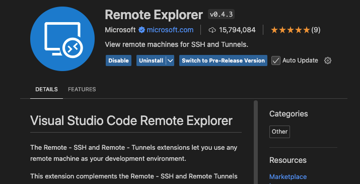
URL: https://marketplace.visualstudio.com/items?itemName=ms-vscode.remote-explorer
Ejecute la extensión en la parte de la izquierda y en donde dice ssh presiona el símbolo `+` y escribe el comando
ssh -J USERNAME@168.176.35.111:443 USERNAME@IPINTERNO:22
donde USERNAME es su nombre de usuario y IPINTERNO es cualquier ip en el rango indicado el inicio de este documento. Al darle enter le va a pedir modificar algun archivo de configuración de ssh, por ejemplo
.ssh/config, lo selecciona y le da enter. Le debe salir un aviso que indica que el host fue añadido. Y a la izquierda (teniendo seleccionada la extensión), le aparecen los host configurados.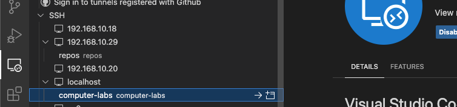
Es importante que en la configuracion creada aparezca como
Host NOMBRECONEXION Hostname IPINTERNO ProxyJump USERNAME@168.176.35.111:443 Port 22 User USERNAME
2.1.2. Uso
Dele click derecho a cualquier host que tenga configurado, y pidale que lo abra en la ventana actual o una nueva (si le pide continuar por conectarse por primera vez, acepta). Con esto ya estará conectado al computador remoto y podrá usar el explorador de archivos para explorar los archivos remotos y editarlos. Tamboen, la terminal se ejecutará remotamente, pero todo lo hace desde su computador.
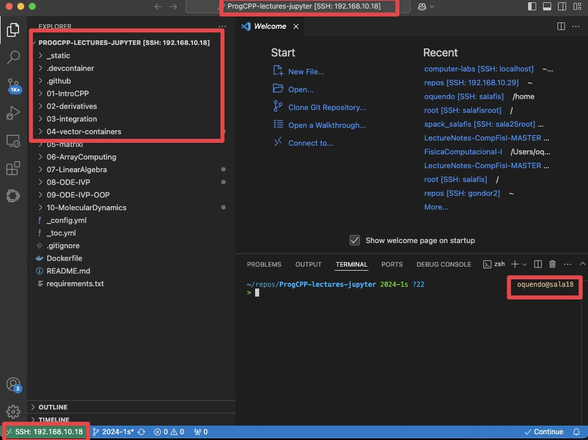
2.2. Conexión gráfica usando xpra (soporta opengl)
La aplicación xpra, https://xpra.org/index.html, permite realizar una conexión gráfica que además soporta opengl, de manera que se pueden realizar visualizaciones con paraview y demás. Usted debe descargar la aplicación para su sistema operativo, desde https://github.com/Xpra-org/xpra/wiki/Download , e instalarla.
Como la coenxión debe realizarse a un cliente interno (no al servidor login), es
necesario que tenga configurado un proxy jump en ssh, que es el protocolo que
usa xpra. Esto es muy sencillo, simplemente edite la configuración de ssh en su
máquina (en linux y macosx es el archivo -/.ssh/config-, en windows debe buscar la
ubicación exacta ), y para conectarse al cliente interno con ip ~192.168.10.18,
debe escribir algo como
Host sala18 HostName 192.168.10.18 ProxyJump 168.176.35.111:443 Port 22 User USERNAME
donde USERNAME es su nombre de usuario, y el nombre de la conexión es sala18,
en este caso. Luego de esto, ejecute xpra desde la
línea de comando como
Xpra start-desktop --swap-keys=NO --ssh="ssh" ssh:USERNAME@sala18 --exit-with-children --start-child="xfce4-session"
En macosx puede usar /Applications/Xpra.app/Contents/Helpers/Xpra . En windows
debe buscar la ruta del ejecutable.
Lo anterior le pedirá al menos dos veces la contraseña, una para el servidor login y la otra para el servidor interno. Acepte cualquier otra confirmación que le salga.
Si no hay error, debe abrirse una sesión de escritorio en donde funciona opengl (probado acá con el comando glxgears)
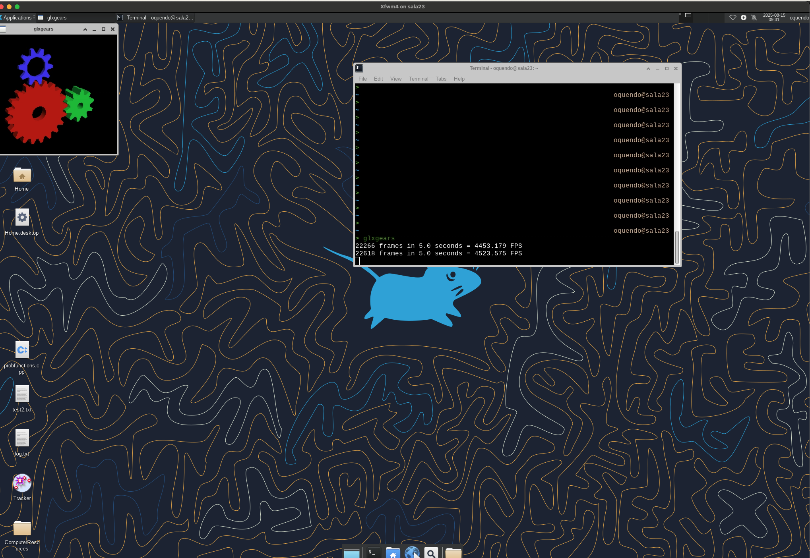
2.2.1. Configuración desde la interfaz gráfica
Si ha configurado el acceso ssh al estilo passwordless, puede usar la interfaz
gráfica de xpra para conectarse. Las instrucciones apra esto se encuentran en
toda la red, y basicamente consisten en generar una clave publica y privada con
un comando ssh-keygen, y luego copiar esa clave privada en el servidor con el
comando ssh-copy-īd. Con esto ya no deberá escribir passwords a siguiente vez
que se conecte. Debe hacer esos dos passos (generación y copia) tanto desde su
máquina hacia el servidor de la unal, como en el servidor de la unal.
NOTA: Al hacer la conexión passwordless, es probable que deba incluir un campo como
IdentityFile ~/.ssh/MYKEY.pem
en la configuración ssh que está usando. Esto le indica a ssh dónde encontrar la clave en caso de que no esté instalada en el sitio por defecto.
Ya configurado el acceso passwordless, ejecute la aplicación xpra.
Obtendrá una ventana como la siguiente:
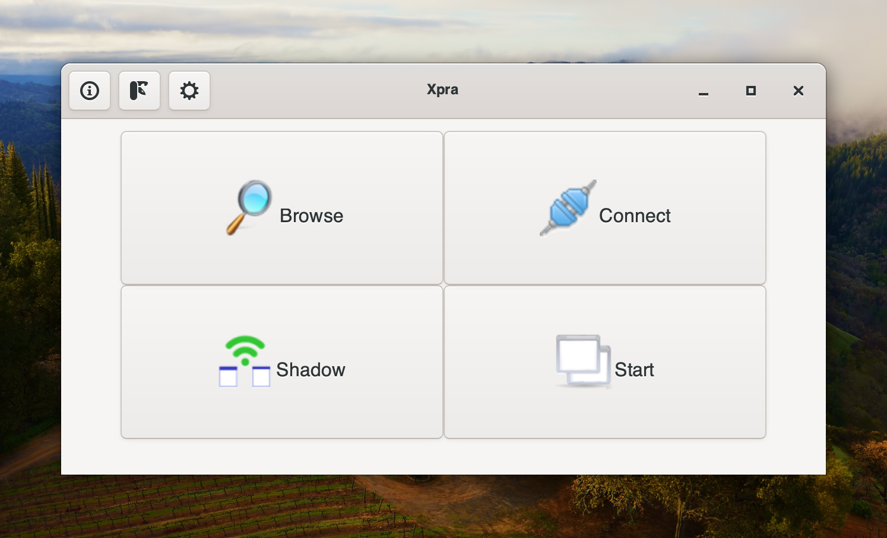
Luego de click en star, y alli configure la conexion a algún cliente interno. NOTA: No esta permitido conectarse graficamente al servidor login ya que se puede sobrecargar.
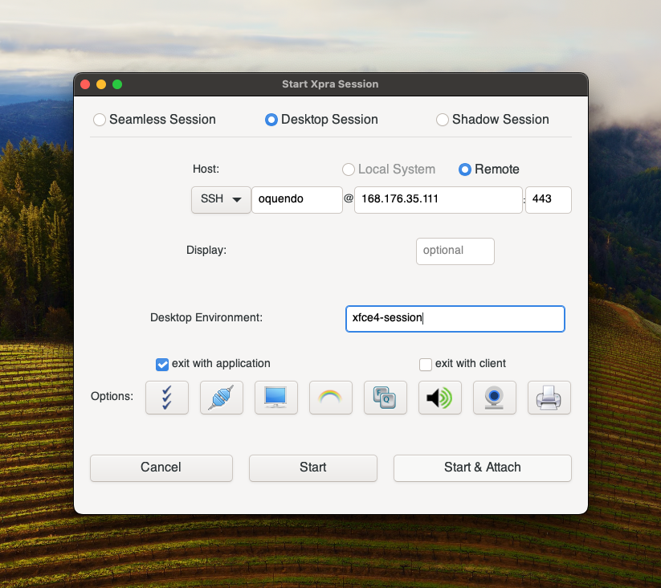
Una vez configurado le da click en start and attach.
2.2.2. Instalacion de xpra en su cuenta de la sala
Por si acaso, si desea instalar su propia version de xrpa, ejecute en su cuenta
CPPFLAGS="-I/usr/include/pygobject-3.0" pip install --user --no-cache-dir xpra
2.3. (DEPRECATED) Conexión gráfica usando x2goclient
REF: https://www.nas.nasa.gov/hecc/support/kb/x2go-an-alternative-to-x11-and-vnc_651.html
El cliente x2go permite conectarse a un servidor x2go y tener un escritorio
remoto encriptado a través de ssh, y es muy rápido. Actualmente, la mayoría de
los nodos internos ofrecen un servidor x2go. El servidor principal de login no
tiene un servidor x2go, para evitar que se realicen trabajos allí. Usted se
conectará a los clientes internos (ips en el rango 192.168.10.[2-29]) usando
el servidor externo como puerta de entrada (ip 168.176.35.111).
Note que x2go NO soporta OpenGL.
2.3.1. Configuración de una sesión de x2go
Instale el cliente descargándolo de client desde https://wiki.x2go.org/doku.php/download:start . NOTA: Los usuarios de Mac Os X deben descargar e instalar previamente xquartz desde https://www.xquartz.org/
Enlaces directos:
Ejecute x2go y en el menú seleccione
Session -> New Session. Allí llene la información que básicamente sería darle un nombre a la sessión, en Host colocar el ip del cliente interno al que se quiera conectar (en el ejemplo se muestra192.168.10.37pero debe cambiarla a alguna en el rango actual192.168.10.[2-29], como, por ejemplo,192.168.10.4), en login su nombre de usuario, en el puerto colocar 22 (este es el puerto del cliente interno), activar conectar a través de un proxy y allí colocar los datos del servidor de entrada, como muestra la siguiente figura. Además en el tipo de sesión selccionar XFCE: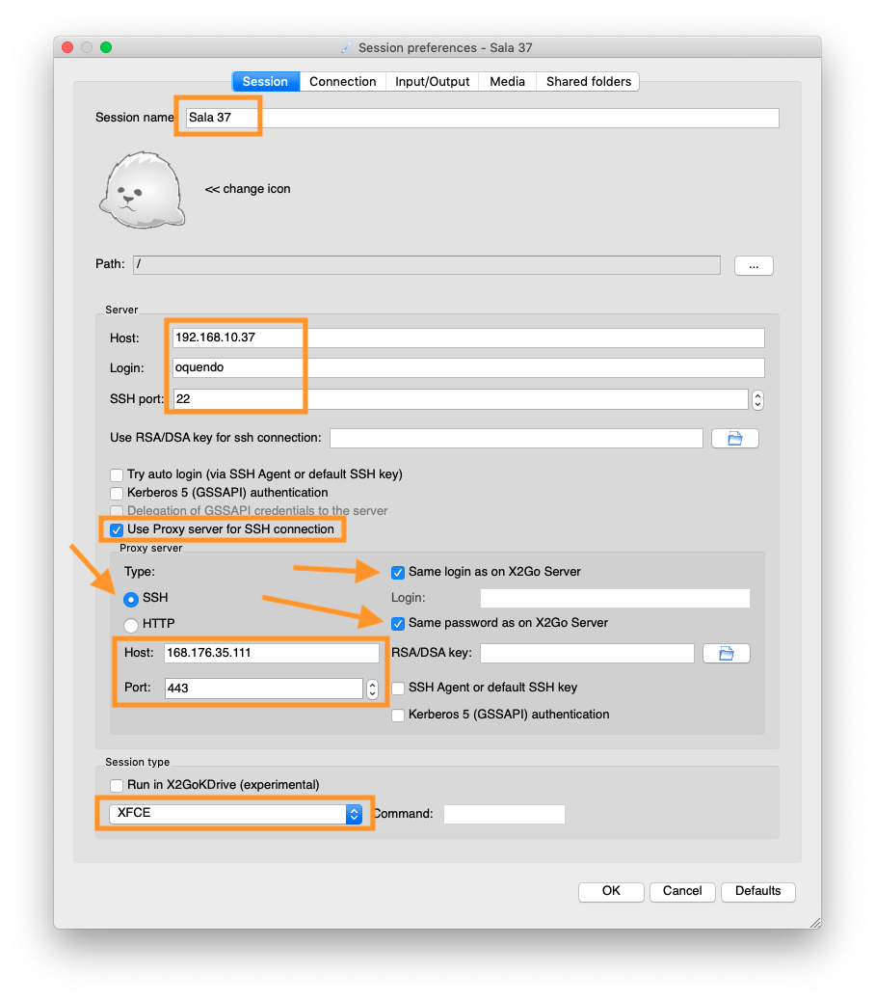
NO MODIFIQUE LA DIRECCIÓN DEL SERVIDOR EXTERNO
168.176.35.111ni su puerto443.
2.3.2. Conexión con x2go
Una vez tenga configurada alguna sesión, simplemente de click a la sesión, llene el password si es necesario, y tendrá a su disposición un entorno gráfico ejecutado en el computador interno que haya escogido en la configuración, como lo muestra la siguiente figura

La primera vez que se conecta se le preguntará si desea aceptar el hostkey del servidor, debe decir que sí
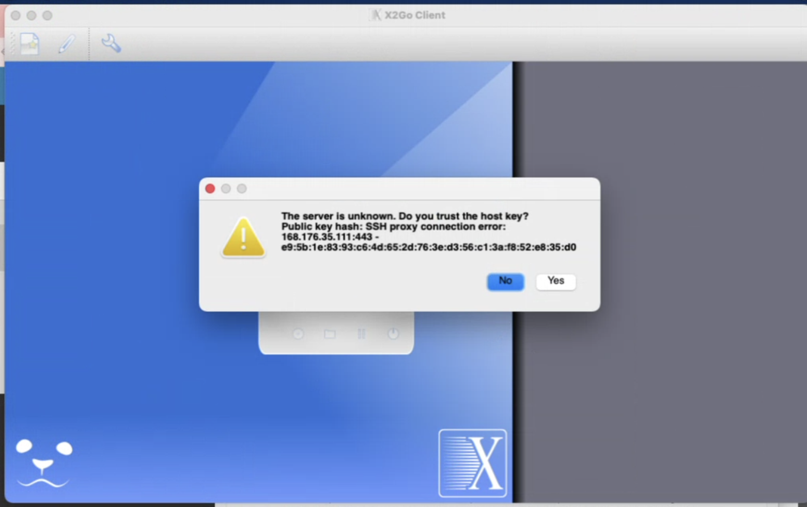
Algunas veces, se implementa un cambio de contrasenha para la primera vez que se conecte, y deberá cambiar la contraseña primero escribiendo la actual (normalmente su número de documento)
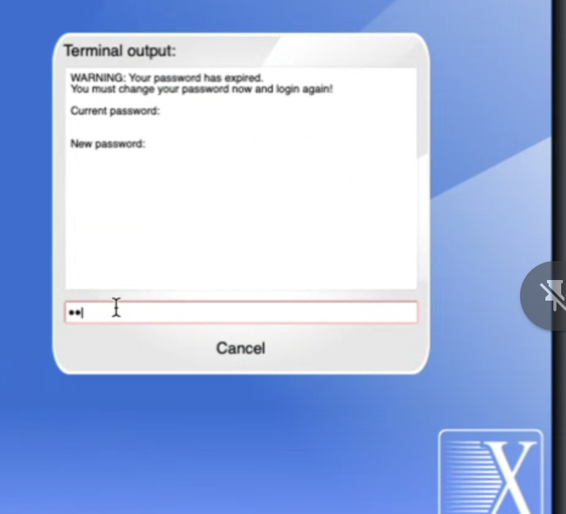

Y luego colocando (se le solicita dos veces para confirmar) la nueva contraseña
- IMPORTANTE Recomendación con x2go: deshabilitar screensaver
NOTA: Desde 2023-03-01 es probable que NO requiera hacer esto ya que se han desinstalado todos los screensaers.
Para evitar que la sesión se bloquee sin recuperación luego de unos minutos de inactividad se les recomienda que deshabiliten los programas xscreensaver, xfce4-screensaver y el bloqueo de pantalla, todos accesibles desde el menú y configuración (
Applications, Settings, ir al final del menu). Las siguientes figuras muestran cómo deben quedar deshabilitados estos servicios:- xscreensaver
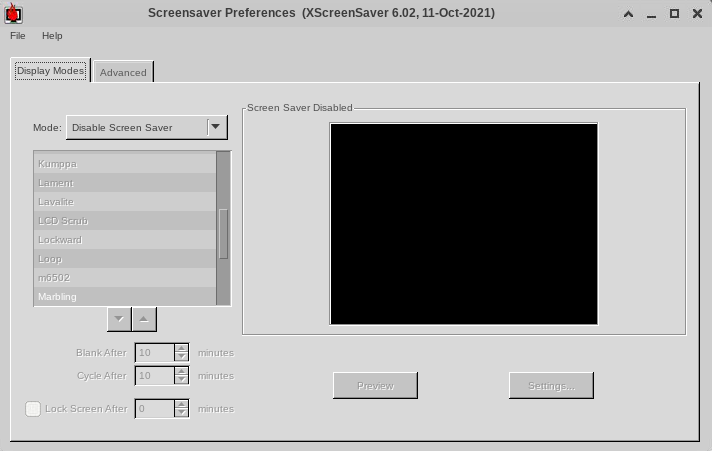
- xfce4-screensaver
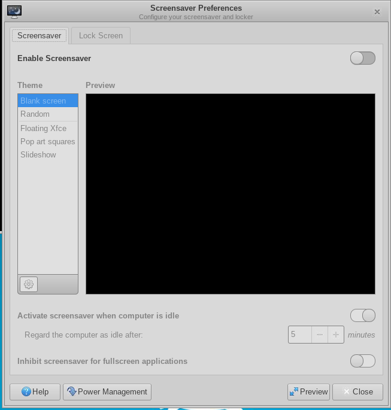
- screen lock (second tab from xfce4 screensaver prefs):
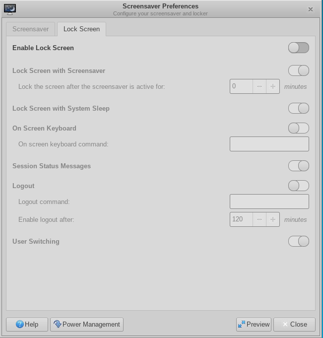
2.3.3. Compartir una carpeta local con el escritorio remoto de x2go
Para facilitar el intercambio de archivos, x2go permite compartir carpetas del computador local que ejecuta x2go (cliente) con el servidor de x2go(computador remoto). Para hacer esto, simplemente en x2go vaya a la sessión que ya tiene configurada y funcional y entre a las preferencias (menú de tres barras y luego preferencias)
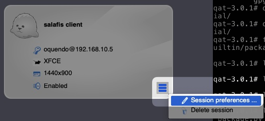
Luego, en la parte superior selecciona el tad de Shared folders,
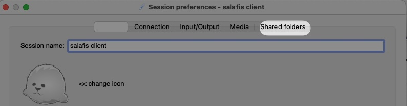
Y allí navega para escoger el directorio que desea compartir, dando click en el ícono de carpeta, una vez seleccionado le da click a add, y luego se asegura de haber selccionado automount, selecciona
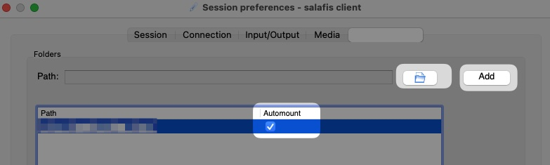
Con esto guarda (ok), se conecta, y en el escritorio le aparecerá un ícono con el nombre asociado a la ruta que compartió. Le da click y podrá copiar y pegar allí archivos y demás, intercambiando datos entre el cmputador local y el remoto.
NOTA IMPORTANTE: Si obtiene algún error al abrir la carpeta en el escritorio remoto, no la abra con doble click sino que de click derecho, escoja abrir con, y busque el comando x2gofm .
2.4. Conexión por ssh
2.4.1. Conexión básica por terminal
El ip público del servidor es 168.176.35.111. La conexión básica por ssh se establece de la siguiente manera
ssh -p 443 USERNAME@168.176.35.111
donde 443 es el puerto de conexión y debe reemplazarse USERNAME por el
nombre de usuario (debe tener una cuenta previamente creada). Este comando le
pedirá la clave (si no está usando llaves de autenticación, o si es la primera
vez) y si la autenticación es exitosa el usuario observará el siguiente prompt:

Allí se describen los diversos ips internos a los que se puede conectar el usuario. Por ejemplo, si desea conectarse a un nodo de 4 threads, podría usar
ssh 192.168.10.12
o también
ssh sala12
No es necesario especificar el puerto ya que se usa el que es por defecto, el 22. Allí podrá ejecutar sus trabajos.
NOTA: La primera vez que se conecte a cada nodo, ya sea el de login o uno interno, se le va a preguntar por la autenticidad de ese host. Debe aceptarla.
2.4.2. Conexión desde Windows
Windows 10 trae soporte para cliente ssh, especialmente en el WSL. En lo que sigue se mostrarán opciones para esta y otras versiones de Windows:
- Instale una extensión de google chrome llamada chrome secure shell .
- Instale una aplicación: como kitty, putty, winsshterm , MobaXterm(basic)
Las imágenes que siguen muestran la conexión desde kitty (en una máquina virtual de windows 7) o desde la extensión de chrome (que funciona en cualquier instalación de chrome)
- Chrome secure shell
Ejecute la extensión e introduzca la información necesaria
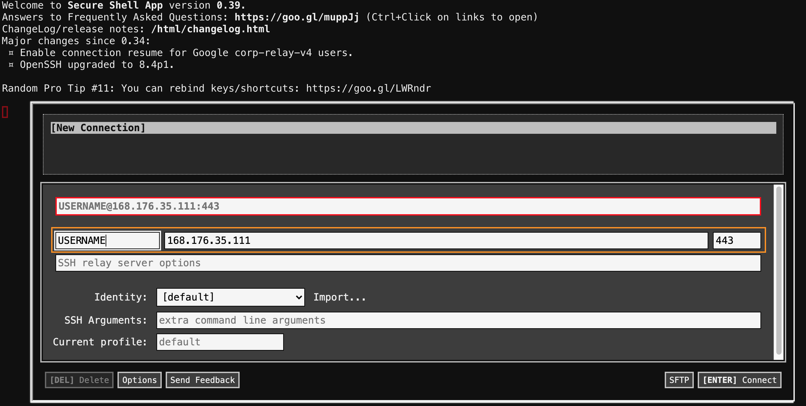
Debe autorizar los permisos necesarios, como darle permiso a la extensión para conectarse o aceptar la identidad de la máquina remota escribiendo yes en el cuadro que sale
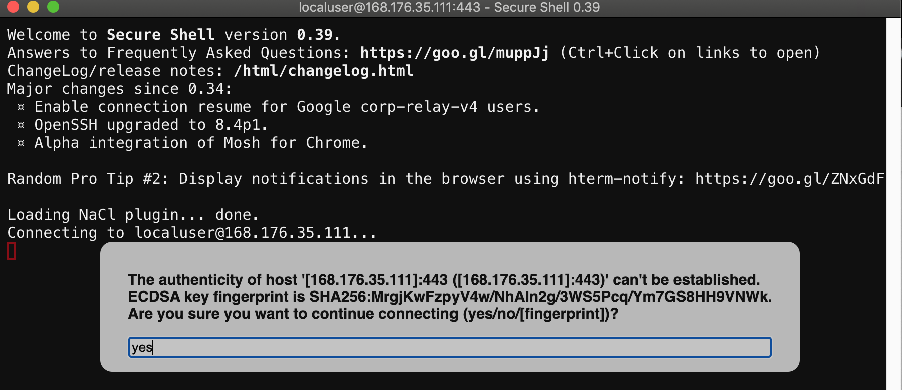
Y luego podrá entrar sin problema
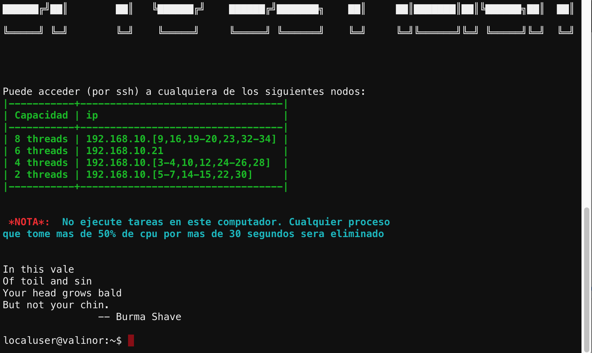
Es importante resaltar que esta extensión soporta mosh, que le permite reconectarse automáticamente después de una caída de conexíon.
- kitty
Configuración de la conexión: simplemente escriba el ip, el puerto, y da click en start (a la izquierda)
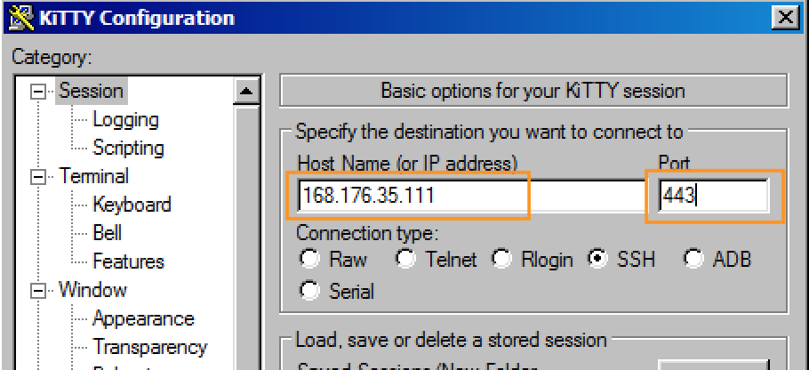
Luego escriba su nombre de usuario y contraseña y deberá entrar al prompt del login server:
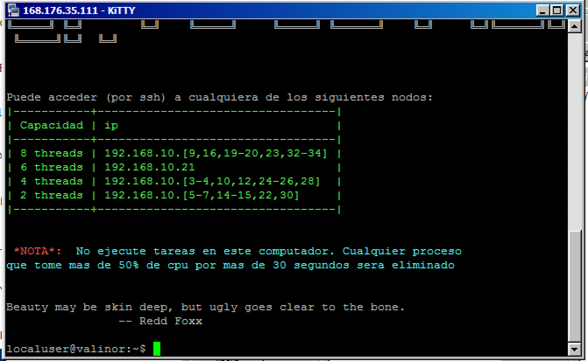
2.5. (Opcional) Conexión con servidor vnc (turbovnc) para OpenGL
Existen algunas aplicaciones que requieren OpenGL para su funcionamiento. OpenGL no está soportado en x2go. Para resolver esto se puede usar un servidor vnc con soporte OpenGL (como turbovnc), pero esto requiere a su vez requiere varias cosas (ver https://docs.hpc.cam.ac.uk/hpc/user-guide/turbovnc.html , https://www.osc.edu/resources/available_software/software_list/turbovnc) :
- Activar el servidor vnc dentro de un cliente de la sala de cómputo (con su configuración respectiva)
- Crear un túnel local que direccione el puerto del cliente a un puerto local.
- Conectar turbovnc al túnel local.
Para realizar lo anterior, se indican a continuación las instrucciones específicas que ya han sido probadas y funcionan, pero debe seguirlas correctamente:
- Activación del servidor vnc en un cliente interno:
Entre (por ssh o x2go) al cliente interno en donde va a ejecutar el servidor vnc. Allí ejecute el siguiente comando para cargar el paquete de turbovnc
source /packages/spack/share/spack/setup-env.sh spack load turbovncNOTA: este paso se realiza una sola vez: configurar al password de acceso al servidor, ejecutando el comando
vncpasswd
y escribir el password dos veces.
Ejecutar el servidor vnc y tomar nota del puerto asignado: Ejecutar
vncserver
Al crear el servidor se asigna un puerto de la forma
590R. Es importante anotar ese valor deR. Este número es el que aparece cuando se ejecuta el comandovncservercomo un mensaje en la consola que dice algo como/home/$USER/.vnc/sala2.salafis.net:R.log)o cuando se ejecuta el comandovncserver -list
en donde el número
Raparece debajo deX DISPLAY.
- Creación del tunel:
Ejecutar el siguiente comando, reemplazondo
Rpor su valor correcto (se asume que se desea conectar al cliente interno que termina en .2):ssh -f -N -p 22 USUARIO@192.168.10.2 -J USUARIO@168.176.35.111:443 -L 590R:localhost:590R
evidentemente debe reemplazar
USUARIOpor su nombre de usuario. Puede ser que el comando se quede ejecutando sin hacer nada más. Déjelo así y no cierre la ventana en donde lo ejecutó. Este comando debe ejecutarse en una terminal. Más abajo se muestra también como configurarlo en putty o kitty.
- Conectarse usando el cliente turbovnc:
- En su computador debe tener instalado el turbovnc viewer (descargarlo de
https://sourceforge.net/projects/turbovnc/files/ , para windows es el
archivo que termina
.exeo.msi) . Ejecutar turbovnc, y cuando pida los datos de conexión se coloca
localhost:590R
reemplazando
Rpor el valor correspondiente. Se escribe el password correspondiente que se creó convncpasswdy con esto se abre un escritorio que tiene soporte para opengl. Se puede verificar abriendo una consola y escribiendoglxgears
- En su computador debe tener instalado el turbovnc viewer (descargarlo de
https://sourceforge.net/projects/turbovnc/files/ , para windows es el
archivo que termina
2.6. Conexión desde una tableta android
Es posible conectarse desde android a la sala. Lo que se muestra a continución está probado en android 14. Si su tableta no soporta alguna de las aplicaciones mostradas, debe encontrar alguna equivalente con la misma funcionalidad. Igual para iso, debe buscar la alternativa. La idea general es que el dispositivo móvil se conectará a un servidor VNC o similar que esté ejecutándose en la sala. Por esta razón, es necesario ejecutar este servidor antes de intentar cualquier conexión. Los pasos a seguir son:
- Activar el servidor vnc en algún cliente dentro de la sala de cómputo.
- Crear un tunel que redireccione el puerto de ese cleinte a un puerto dentro del dispositivo.
- Conectar la aplicación VNC del dispositivo a este puerto.
En este ejemplo se usarán las siguientes aplicaciones para ejecutar en el dispositivo:
- ssh: juicessh, https://juicessh.com/ (posible alternativa: termius, o termux)
- vnc: AVNC, https://play.google.com/store/apps/details?id=com.gaurav.avnc&hl=es o https://f-droid.org/es/packages/com.gaurav.avnc/
2.6.1. Initial config en juicessh (only once)
Abra la aplicación y cree una nueva identidad. Diligencia los campos Nickname (nombre de la identidad), username (nombre de usuario) y password. Luego de click en el chck arriba a la izquierda.
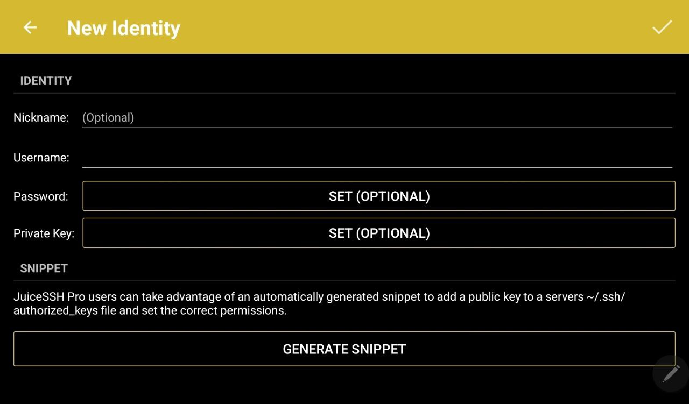
Ahora debe crear dos conexiones: una al servidor de login, y la otra al cliente interno. Para esto, vaya a Connections, y allí debe crear una nueva conexión (click en el símbolo + en la parte derecha inferior). Allí diligencie:
- Nickname: nombre de la conexión (como
server unalosala18) - Type: SSH
- Address: El ip externo del servidor de la sala (168.176.XXX.XXX), o el ip del cliente interno (192.168.10.XX)
- Identity: La identidad que recién creó, con las credenciales de la sala de cómputo.
- Port: 443 si es el servidor externo, 22 si es un cliente interno.
- Connect via: Para el servidor login, no coloque nada acá. Para el cliente interno, seleccione la conexión que creó para el servidor de la sala.
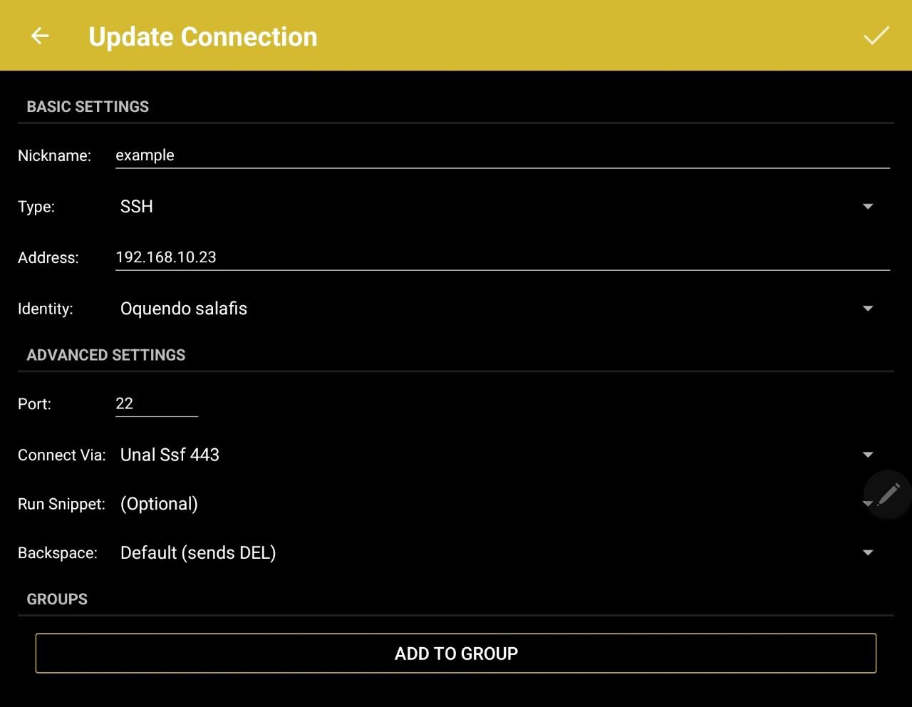
Con lo anterior, ya tiene se puede conectar por ssh tanto al servidor de la sala de cómputo como a un cliente interno con simplemente tocar la conexión que necesite!
2.6.2. Launching the vnc server at the client (every time)
El tunnel se va a crear usando turbovnc en el cliente interno de la sala. Usando juicessh, entre al cliente interno. Allí, escriba
spack load turbovnc
El siguiente comando solamente se require una vez, en caso de que no lo haya ejecutado nunca, y sirve para crear un passwrod que asegure su conexión al servidor gráfico
vncpasswd
Ahora lance el servidor vnc y dbe tomar nota del puerto asignado: Ejecutar
vncserver
Al crear el servidor se asigna un puerto de la forma 590R. Es importante
anotar ese valor de R. Este número es el que aparece cuando se ejecuta
el comando vncserver como un mensaje en la consola que dice algo como
/home/$USER/.vnc/sala2.salafis.net:R.log) o cuando se ejecuta el comando.
Cuando termine la sesión, se le recomienda usar el comando
vncserver -kill :R
o estará saturando el computador y tendra problemas futuros para conectarse.
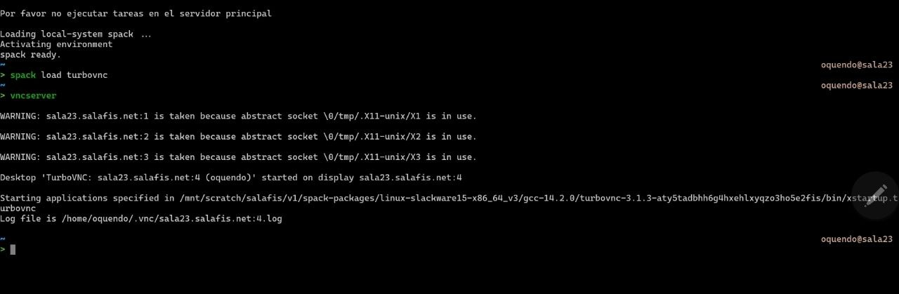
2.6.3. Connecting to the vnc server from the tablet/cellphone
- Connection config (once)
Abar AVNC y configure una nueva conexión. Allí coloquele un nombre, coloque el ip del cliente interno y el puerto, que debe ser 590R donde R es el número que extrajo anteriormente. Note que si este número cambia, debe editar esta configuración. Seleccione ssh tunnel, coloque el ip del servidor externo, el puerto 443, seleccione password y coloque el password de la sala.

- Connection
Simplemente de click en la configuración. Ya estará conectado a la sala y con soporte de opengl! Si le pide password, use el que escribión cuando ejecutó vncpassword. Lo único que debe tener en cuenta es que si cambia el número R del servidor vncserver, debe cambiarlo en la configuración.
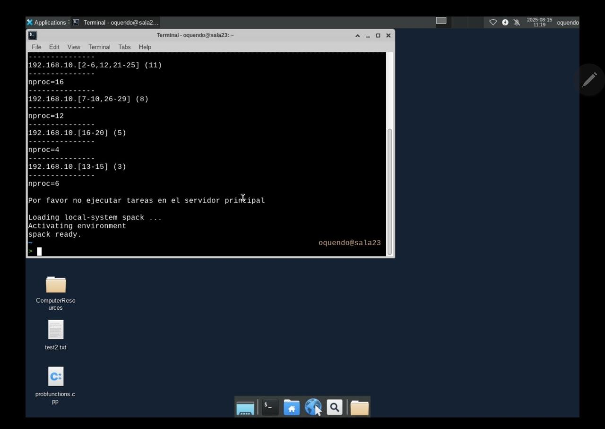
2.7. Conexión dentro del campus desde la red UNAL
Actualmente (2023-02-22), la red wireless UNAL restringe el protocolo ssh y esto hace que no pueda establecerse conexión con el servidor cuando se está dentro del campus conectado a la red UNAL. A pesar de solicitar la solución varias veces no ha sido posible resolver este problema y por tanto se plantea acá una solución alternativa: usar una vpn. En la lista de videos puede encontrar uno que muestra el procedimiento: https://www.youtube.com/playlist?list=PLxbXsIEaf05oGM0i-HrMVdClxPyrIsq4e
De todas maneras, otra forma sencilla es simplamente compartir la conexión de su celular con su computador. Evidentemente el celular debe tener conexión de datos. Pero si prefiere hacerlo por la red de la unal, tendrá que seguir lo que se muestra a continuación.
Los pasos a seguir son:
- Instalar tailscale (el video de antes muestra esto en Windows, pero puede ser usado en linux, mac, android): https://tailscale.com/
- Enviar un email el encargado de la sala informando su usuario de github (si no lo tinee, debe crearlo, idealmente con e correo de la unal).
- Esperar la confirmación de haber sido añadido a la organización correspondiente.
- Abrir tailscale usando la cuenta de github, luego seleccionando una multinet asociada a la organización que se le informó.
- Conectarse siguiendo los mismos pasos pero cambiando el ip tradicional del servidor (168.176.x.x) por el que muestra tail scale para serversalafis.
La conexión dentro del campus será rápida. Fuera del campus será más lenta porque debe enrutarse a servidor externos y entonces es preferible usar el método tradicional. Se le recomienda tener dos sesiones de x2go, una con el ip tradicional y otra con tailscale.
2.8. (Opcional) File transfer
Por favor revise de nuevo la sección de 2go ya que allí se describe una manera gráfica de compartir un directorio entre el computador local que usa y el escritorio remoto.
También ss posible copiar archivos desde o hacia la sala de cómputo, usando la línea de comando. La forma exacta de hacerlo va a depender del putno de origen y destino. A continuación se muestran algunos ejemplos específicos.
2.8.1. Desde computador personal hacia servidor de login
Como el acceso al servidor de login es directo, se puede usar cualquier herramienta que permita usar ssh compo protocolo. Por ejemplo, se puede usar scp,
scp -P 443 mudir/myfile.cpp USERNAME@168.176.35.111:/home/USERNAME/target
donde USERNAME es el nombre de usuario. Todo lo que se copie en el home estandar
de un usuario (en este caso /home/USERNAME) es visible en todos los clientes
de la sala.
2.8.2. Desde computador personal hacia un cliente interno
Este caso ocurre cuando a un usuario en particular se le ha activado un
directorio local en un cliente interno para, por ejemplo, manejar cantidades
grandes de datos. Para efectos de ejemplo, asumamos que en el cliente interno
sala100, con ip 192.168.10.100, se ha creado un directorio local llamado
/mnt/tmp/localshare. Para realizar la copia ahora se debe pasar a través del
servidor login para poder acceder al cliente interno, y se puede usar la opción
ProxyJump de ssh como
scp -o "ProxyJump 168.176.35.111:443" mudir/myfile.cpp USERNAME@192.168.10.100:/home/USERNAME/target
2.8.3. Desde un computador interno o servidor hacia afuera
Desde 2023-02-06, no se requiere proxy ni corkscrew, etc
2.9. Otros tips
2.9.1. Usando proxyjump para acceder directamente a un computador interno (terminal)
Si un usuario desea conectarse directamente a un pc interno puede usar el servidor de login como bastión intermedio, a través el siguiente comando
ssh -J USERNAME@168.176.35.111:443 USERNAME@192.168.10.12
Y en este caso entrará directamente al nodo 192.168.10.12 y será transparente
su conexión.
- Windows
No todos los clientes ssh de windows soportan las versiones recientes de ssh y la opción proxyjump. Sin embargo puede seguir las siguientes instrucciones para kitty , o usar plink, o crear un tunnel como se muestra más adelante.
2.9.2. Configuración de un tunel para acceso directo a un nodo interno
El objetivo de este punto es establecer una conexión directa a un nodo interno y dejar esta conexión expuesta localmente en un puerto específico. Esto se llama “abrir un túnel”. La utilidad de un tunel es que no será necesario hacer dos logins y además permitirá conectarse graficamente a un escritorio compartido en una sesión gráfica.
Asumiendo que queremos un túnel al computador interno de ip 192.168.10.12, el comando a ejecutar es
ssh -f -N -o 'Compression=no' -L 2222:192.168.10.12:22 -p 443 USERNAME@168.176.35.111
En este caso, el puerto local del tunel es el 2222.
Para probar que el tunel funciona, ejecute:
ssh -p 2222 USERNAME@localhost
y deberá aparecer inmediatamente logueado en 192.168.10.12 .
El túnel debe ser funcional para que pueda usar x2goclient.
- Windows
chrome secure shell: configure la conexión como se muestra a continuación, conéctse y manténgala abierta
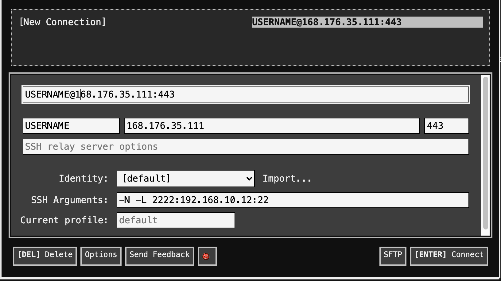
kitty: Además de colocar el ip y el puerto, en las opciones a la izquierda debe ir a ssh, dar click en el símbolo +, seleccionar tunnel, en source port color
2222, en destination192.168.10.12:22, le da add, y debe quedar como se muestra a continuación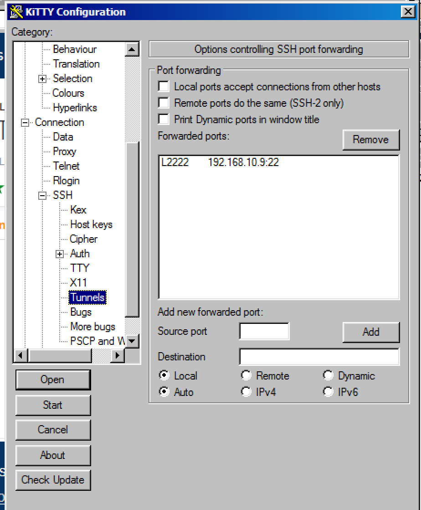
Luego le da click en start y NO cierra la sesión.
2.9.3. Conexión por medio de llaves y sin password
Si prefiere no escribir la clave cada vez que se conecta, además de aumentar la seguridad, puede crear una llave pública privada y copiarla al servidor de login (ver, por ejemplo, https://www.tecmint.com/ssh-passwordless-login-using-ssh-keygen-in-5-easy-steps/). Basicamente debe ejecutar los siguientes comandos
Generar la llave (puede dejar vacía la passphrase de la llave):
ssh-keygen -t rsa
Copiar la llave
ssh-copy-id -p 443 USERNAME@168.176.35.111Debe introducir el password. Si lo anterior funciona exitosamente, la siguiente vez que use ssh al servidor de login no tendrá que introducir la clave.
3. Local: Virtual box
En este caso pueden usar una máquina virtual que he diseñado para este fin, o ustedes mismos por su cuentas instalar y configurar todo lo necesario en su distribución Linux favorita. Para que funcione la máquina virtual es necesario que su procesador soporte virtualización. Esto pasa con la mayoría, sean AMD o Intel, pero lastimosmente casi nunca está activado. Para activar esa opción, deben entrar a la bios (normalmente cuando arranca el computador deben ver la opción de setup o similar y a qué tecla corresponde, como F2, F10 o F12, y presionarla) y una vez en la bios buscar y activar la opción de virtualizacicón. Se pueden seguir las instrucciones en (aunque deben ver si aplica o no a su bios; si no aplica, deben buscar su modelo exacto en google) https://www.softzone.es/2016/07/23/como-activar-la-virtualizacion-en-los-procesadores-intel-amd-desde-biosuefi/
Las instrucciones a seguir son las siguientes:
3.1. Instalación de virtualbox y el extension pack (una sola vez)
- Instalar virtualbox en su computador. Lo pueden descargar de https://www.virtualbox.org/wiki/Downloads . Existen instaladores para Windows, linux, mac.
- Instalar virtualbox extension pack tambien descargando del mismo sitio (como ven la versión debe coincidir con la de virtual box). Le dan doble click y lo abren con virtualbox. Esta utilidad les permite soportar USB3, compartir directorios entre el host (su computador) y el guest (la máquina virtual), etc.
3.2. Instalación de la máquina virtual (una sola vez)
Descargar la siguiente imagen de maquina virtual que se ha creado (aprox 5.0 GB): https://tinyurl.com/Slack64-VirtualBox (Debe descargar el archivo único d extensión
.ova):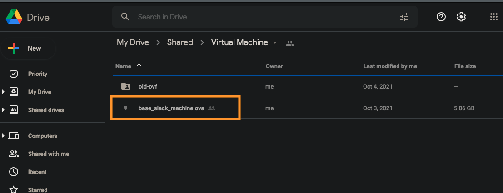
Abrir virtualbox e importar la maquina virtual recién descargada :
File -> Import Appliance(importan el archivobox.ova):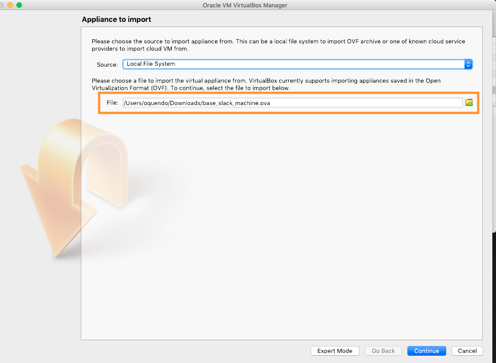
Si lo desean puede cambiar alguna configuración, como añadir más memoria RAM y aumentar el número de procesadores asociados. No cambie la configuración de red a menos que sepa lo que está haciendo:
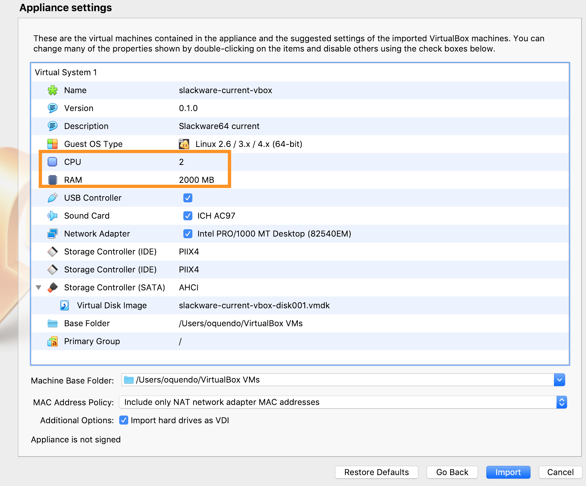
Este proceso puede tardar varios minutos
NOTA: Si después de importar exitosamente la máquina virtual usted la inicia y ésta lo lleva a una shell interactiva de uefi como la siguiente:
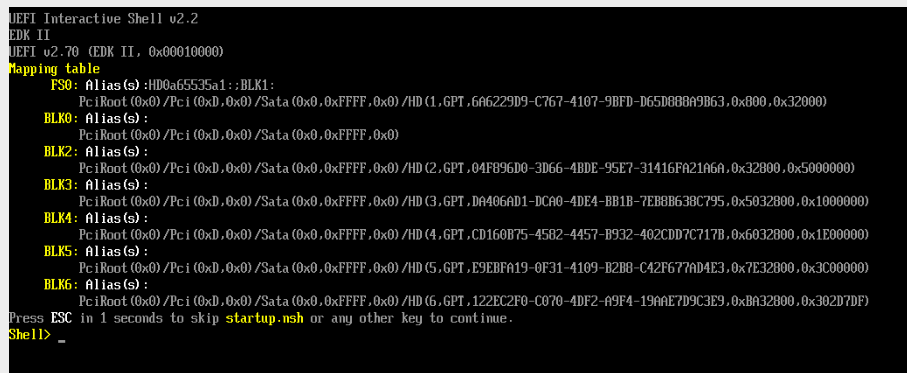
se le sugiere que apague la máquina virtual, entre a settings y en sistema desactive la opción de UEFI como muestra la siguiente figura:
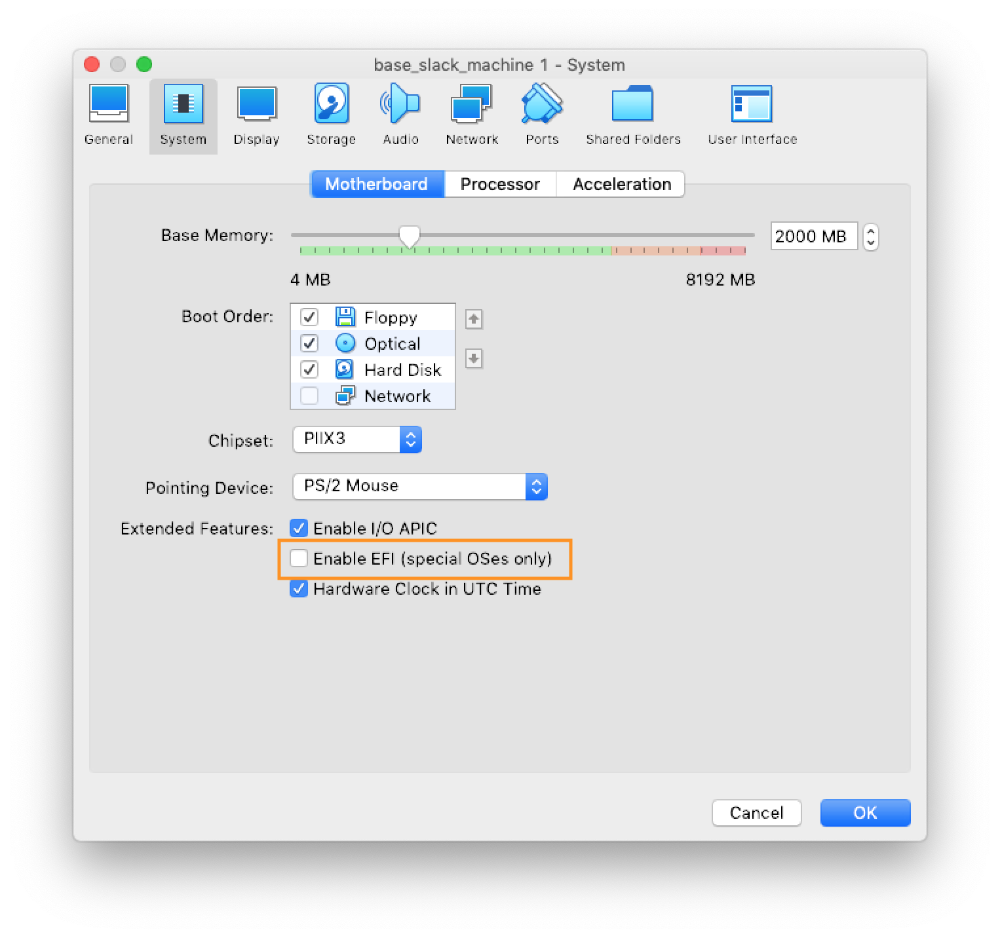
Después de esto podrá iniciar la máquina virtual sin problema.
3.3. Opcional: Configurar un directorio compartido entre el host y la máquina virtual
Si desea poder leer y escribir desde la máquina virtual en un directorio
compartido entre su host y la máquina, debe crear un directorio compartido
siguiendo configurando la máquina virtual (apagada) así: va a Settings ->
Shared Folders, da click en el ícono que tiene una carpeta con un signo +, en
Folder Path navega en su sistema host y escoge el directorio que desea
compartir, en folder name le coloca el nombre shared (obligatorio), deja SIN
marcar Read-only y Auto-mount, si le sale la opción lo marca como permanente, y
listo. La máquina virtual está configurada para que cada vez que inicia intenta
montar el directorio compartido llamado shared en la ruta /media/hd. Allí
podrá encontrar sus archivos compartidos.
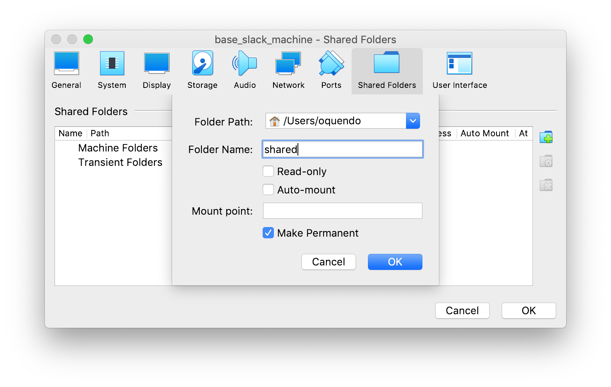
NOTA: En caso de tener problemas de acceso, como falta de permisos para poder acceder a la carpeta compartida, debe añadir al usuario live al grupo vboxsf. Esto se hace convirtiendose en root,
su -
(debe escribir la contraseña de root, que es vagrant), y luego ejecutar el siguiente comando
usermod -a -G vboxsf live
Reinicie.
3.4. Usar la máquina virtual
Iniciar la máquina virtual (dándole start) y esto debería iniciar un linux sin problema. El nombre de usuario es
live, dan enter, y el password eslive. Pueden configurar la resolución en el menúViewde virtualbox, escogiendo la resolución o el escalamiento que deseen. También, habiendo iniciado a linux, en settings pueden cambiar la resolución de la pantalla para que se vea mejor en sus computadores.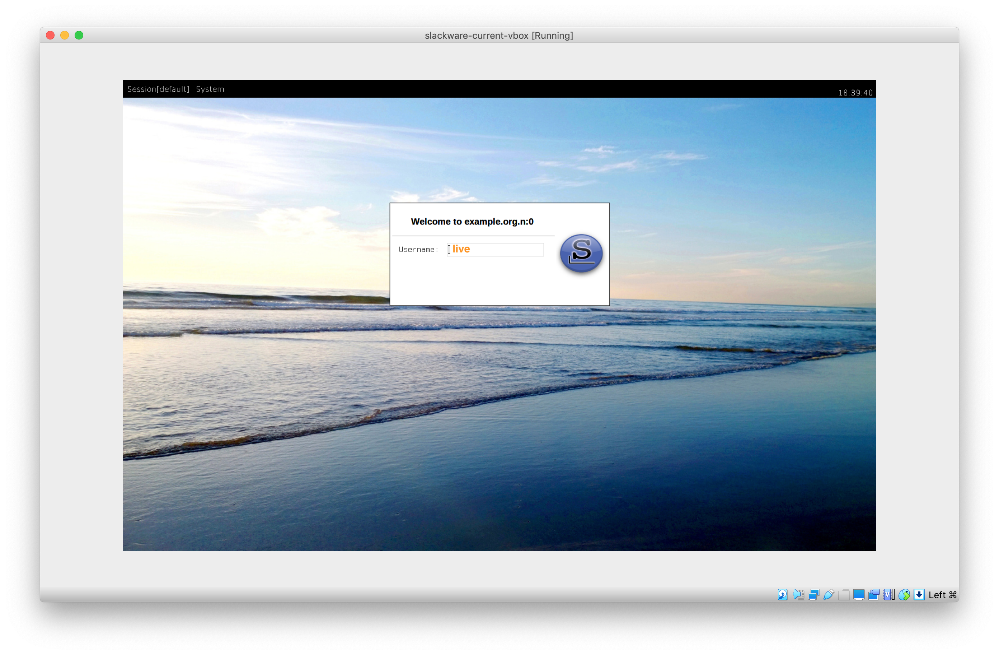
La máquina virtual tiene configurada la consola y el emacs tradicional. También se ha configurado el teclado para que sea latinoamericano, como la mayoría de sus teclados. El entorno gráfico es Xfce 4.16 (muy liviano), y tiene el navegador básico (firfox 78), libreoffice, editores, compiladores, etc.
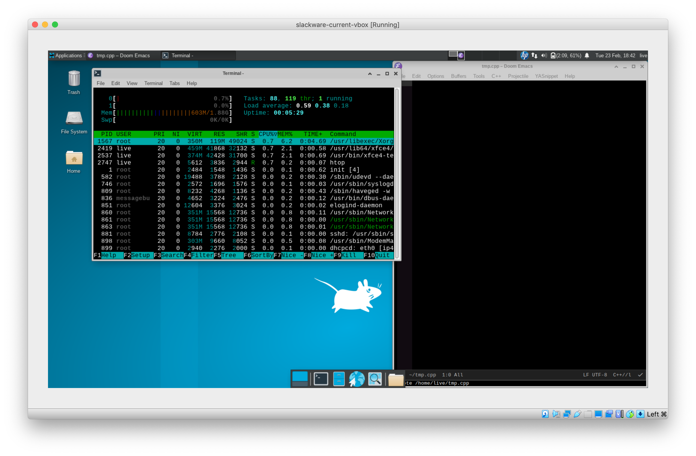
4. Local: Live usb
La máquina virtual le permite ejecutar todo un sistema operativo muy eficiente, pero no necesariamente usa todos los recursos de su computador. Una forma de resolver esto es usar una live usb que tenga persistencia y en donde usted mismo instale las herramientas necesarias. Normalmente en la sala del departamento usamos slackware live , por su bajo consumo de recursos y gran estabilidad, https://alien.slackbook.org/blog/slackware-live-edition/ . Sin embargo, para usar persistencia, la usb live debe ser creada desde linux, no se puede desde windows. Entonces se recomienda usar otras versiones pero allí será necesario que usted mismo se encargue de instalar lo necesario. La ventaja es que usted crea la usb con persistencia, reinicia su computador, presiona la tecla de boot correspondiente al arrancar, lo hace arranacar del puerto usb (donde se supone está conectada la memoria), y entonces tendrá disponible linux con todos los recursos de su computador. Para crear la memoria con persistencia puede usar rufus en windows, https://rufus.ie/ , o unebootin, https://unetbootin.github.io/ . En cualquier caso , esos programas le permiten escoger la distribución en la cual basarse para crear la memoria usb live. Esto tambien implica que se van a demorar descargando el iso de alguna distribución, al menos unos 5Gb. En unebootin se recomienda usar ubuntu ya que es la única que permite persistencia. En rufus debe haber algo similar.
4.1. Ejemplo con Unebootin
Se supone que ya ha instalado unebootin. Ejecute el programa y configurelo como
muestra la figura. En este caso se han asignado 5Gb (depende del tamaño de la
memoria, puede ser aproximadamente igual tamaño total menos 4GB) para la
persistencia (solamente funciona con Ubuntu), y CERCIÓRESE MUY BIEN DE
SELECCIONAR EL NOMBRE EXACTO DE LA UNIDAD DE USB DRIVE, porque de otra manera
puede arriesgarse a formatear su computador. El nombre que aparece en la figura
es típico de Mac Os X. En Windows debe ser de la form D: o similar.
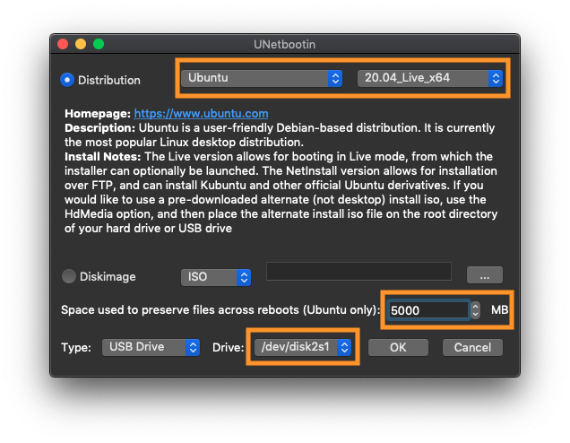
Como en este caso no se ha descargado previamente ubuntu, unebootin lo hará por usted pero eso quiere decir que se tomará un buen tiempo porque son apróximadamente 3 GB. En la figura se muestra esta etapa
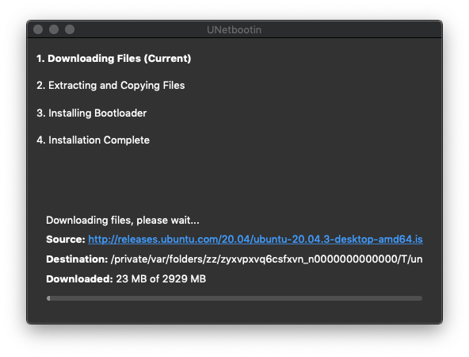
Luego se comenzarán a copiar los archivos de la imagen iso recién descargada a la usb, como muestra la figura
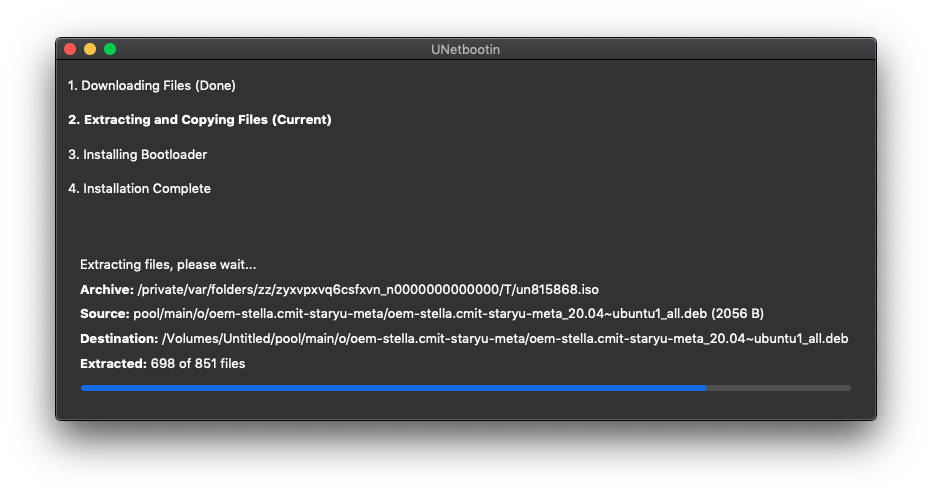
Mas adelante unetbootin configurará la persistencia y finalmente terminará mostrando una ventana como la siguiente
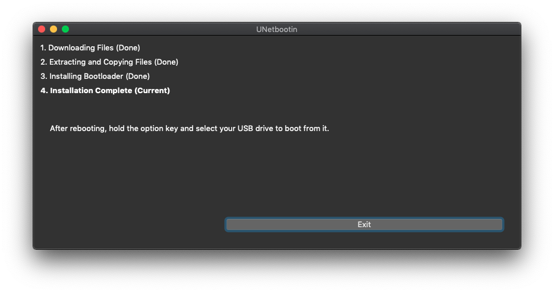
Ahora tiene lista su usb con persistencia. Lo que queda es simplemente que mantenga la usb en el puerto usb, apague y encienda su máquina y la haga bootear desde la usb (depende del modelo del comoutador, a veces es presionando F2, otras F12, debe buscar en google), y su computador cargará este linux de la usb y usted podrá usar linux , sin haberlo instalado, y con todas las capacidades de su máquina.
4.2. TODO Check Ventoy
4.3. TODO Show how to use balenaetcher
https://www.balena.io/etcher/ This allows to easily burn any iso and any platform.
5. Software
En la sala se utiliza spack (https://spack.readthedocs.io/en/latest/) y
environment modules (https://modules.readthedocs.io/en/latest/) para
centralizar la instalación de software.
5.1. spack
Por ejemplo, si desea usar la librería openblas, debe escribir lo siguiente en la consola
spack load openblas
Algunas veces aparecen varias versiones, como en este caso, que el comando anterior indicará lo siguiente:
==> Error: openblas matches multiple packages.
Matching packages:
wrycfcg openblas@0.3.20%gcc@12.2.0 arch=linux-slackware15-x86_64
5tw4ktw openblas@0.3.20%gcc@12.2.0 arch=linux-slackware15-x86_64
62jarbg openblas@0.3.21%gcc@12.2.0 arch=linux-slackware15-x86_64
Use a more specific spec (e.g., prepend '/' to the hash).
En ese caso se puede escoger la veersión siguiendo la instrucción indicada. Por ejemplo,
spack load openblas/62
cargará la version 0.3.21 . Para descargar/limpiar el entorno, puede usar
module unload openblas
o
module purge
Si desea ver todos los paquetes instalados, puede usar
spack find
que mostrará una larga lista como
-- linux-slackware15-x86_64 / gcc@12.2.0 ------------------------ alsa-lib@1.2.3.2 gl2ps@1.4.2 libxft@2.3.2 py-meshio@4.4.6 alsa-lib@1.2.3.2 gl2ps@1.4.2 libxkbcommon@1.4.0 py-mpi4py@3.1.2 apr@1.7.0 gl2ps@1.4.2 libxkbfile@1.0.9 py-mpi4py@3.1.2 apr-util@1.6.1 gl2ps@1.4.2 libxml2@2.10.1 py-numpy@1.23.2 armadillo@10.5.0 glew@2.2.0 libxml2@2.10.1 py-numpy@1.23.2 arpack-ng@3.8.0 glew@2.2.0 libxmu@1.1.2 py-petsc4py@3.17.4 arpack-ng@3.8.0 glew@2.2.0 libxp@1.0.3 py-pillow@9.2.0 ...
Si requiere algún software particular que no esté instalado, debe llenar el formulario https://forms.gle/GyaSL8d1rxFAry9U8 .
5.2. Módulos
Tambien puede usar módulos. En este caso, para saber cuáles están instalados, puede usar
module avail
y cargar el módulo con el nombre correspondiente
module load openblas-0.3.21-gcc-12.2.0-62jarbg
De la misma manera, con unload o purge puede limpiar el entorno.